Sprint6
Usuaris
Crearem 2 usuaris per interfície usant administracion de equipos 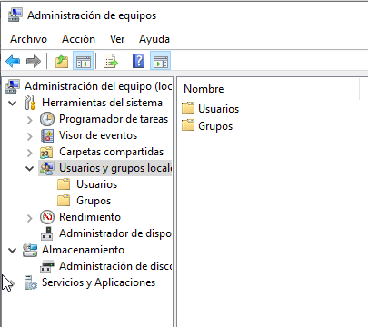
Farem un Usuario nuevo 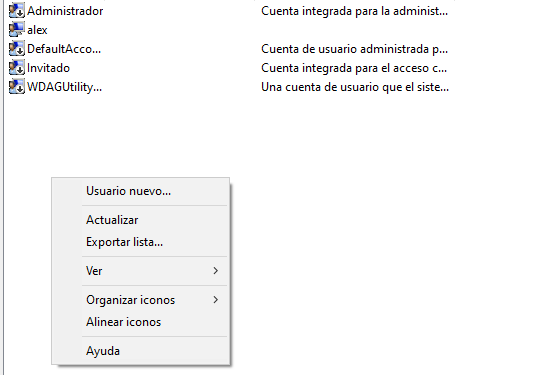
Li posarem nom i contrasenya 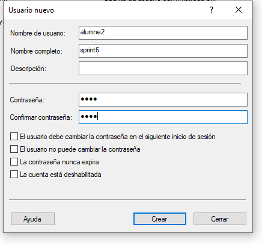
Resultat 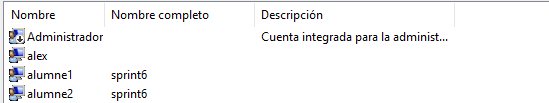
Ara crearem el grup Limitats 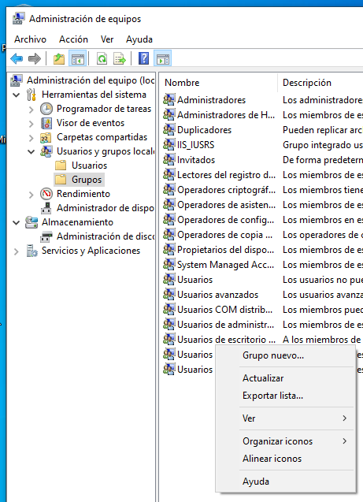
Li posarem els 2 usuaris creats anteriorment 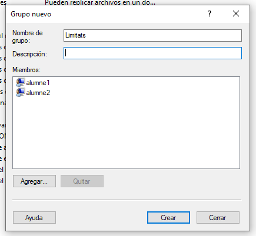
Script de còpia i automatització
Particio i creacio de volumen NTFS 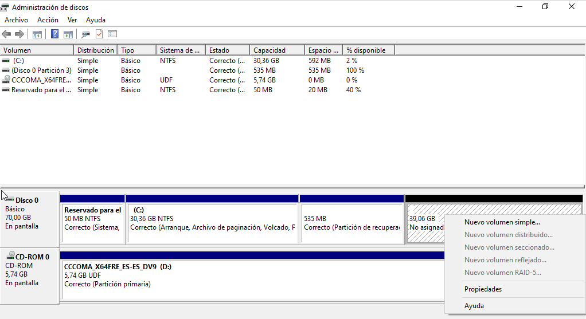
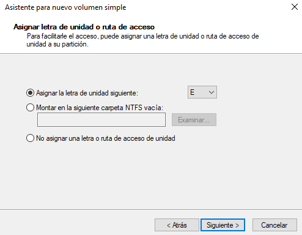
Li posarem el nom de Backups 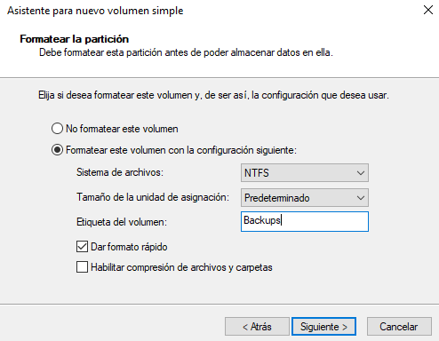
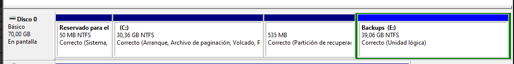
Script en bat que copia el contingut de users i el pega al disc E\CopiesUusaris 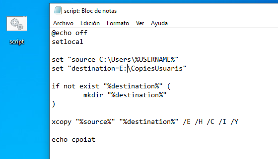
Resultat 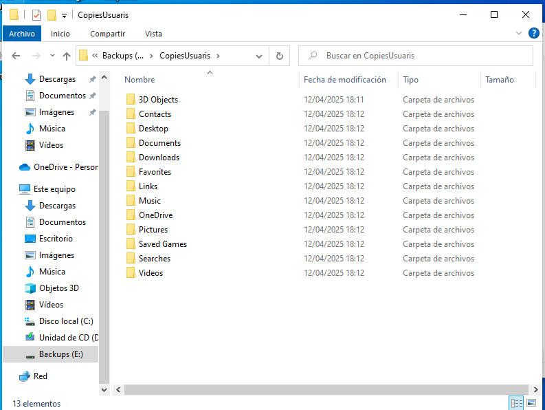
Gestió de processos i serveis
La comanda tasklist mostra la llista de processos actius al sistema 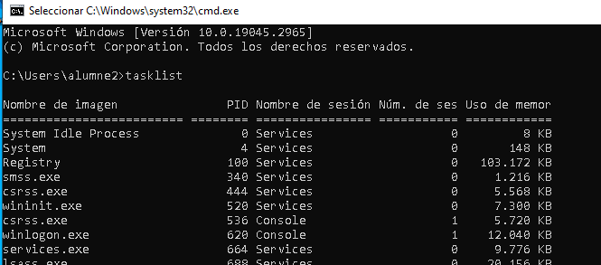
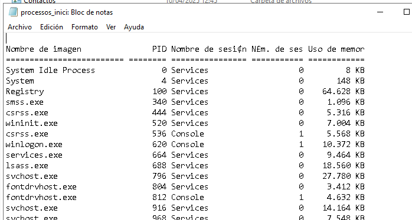
Processos no essencials del sistema
Llista de processos que poden ser considerats no essencials
| Nom del procés | Memòria usada | Justificació per eliminar-lo |
|---|---|---|
dwm.exe |
71.572 KB | Efectes visuals, prescindible en equips amb pocs recursos |
fontdrvhost.exe |
3.412 KB | Gestió de fonts, no essencial si no s’usen fonts especials |
fontdrvhost.exe |
4.632 KB | Idem anterior, duplicat per altra sessió |
MsMpEng.exe |
280.964 KB | Escàner en temps real de Windows Defender |
dllhost.exe |
11.352 KB | Host de COM, es pot desactivar si no es requereix |
svchost.exe |
62.216 KB | Pot contenir serveis secundaris |
MicrosoftEdgeUpdate.exe |
2.528 KB | Actualitzador de Microsoft Edge, no essencial |
SgrmBroker.exe |
7.252 KB | Gestor de seguretat, no essencial en usuaris domèstics |
MoUsoCoreWorker.exe |
44.324 KB | Actualitzacions automàtiques, es pot desactivar temporalment |
SearchIndexer.exe |
31.152 KB | Indexador de fitxers, pot alentir l'equip |
ctfmon.exe |
20.504 KB | Entrada de llenguatge, prescindible si no s’usen idiomes alternatius |
smartscreen.exe |
25.768 KB | Filtres de seguretat de Windows, es pot desactivar |
TextInputHost.exe |
39.068 KB | Entrada tàctil o per veu, innecessari en dispositius sense això |
StartMenuExperienceHost.exe |
78.388 KB | Interfície del menú inici, no crític |
RuntimeBroker.exe |
26.296 KB | Gestor d'autoritzacions, sovint no necessari |
SearchApp.exe |
88.952 KB | Cerca de Windows, es pot desactivar |
RuntimeBroker.exe |
25.452 KB | Idem anterior, duplicat |
ShellExperienceHost.exe |
45.344 KB | Interfície de Windows, no crític |
RuntimeBroker.exe |
17.132 KB | Idem anterior, duplicat |
msedge.exe |
162.652 KB | Navegador Edge, es pot tancar si no s’està usant actualment |
Gestió de permisos
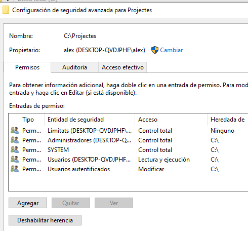
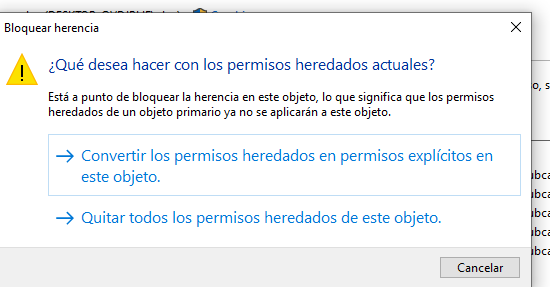
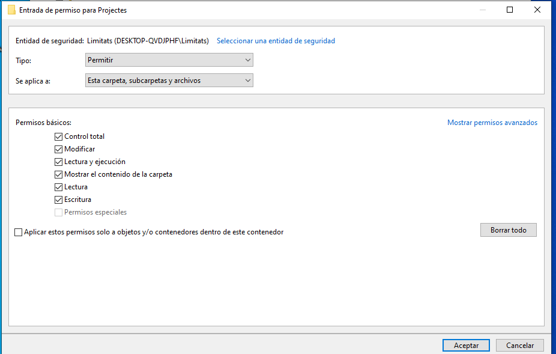
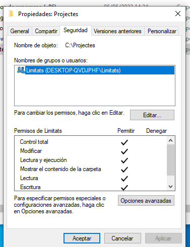